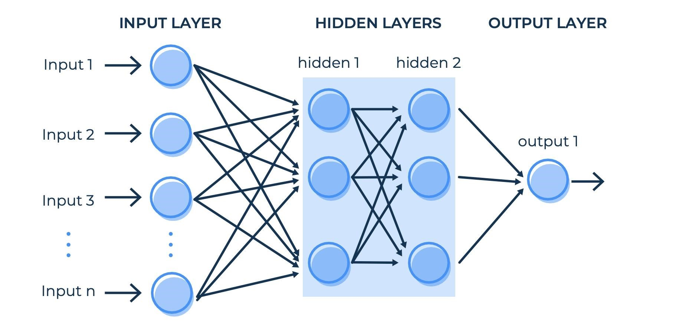
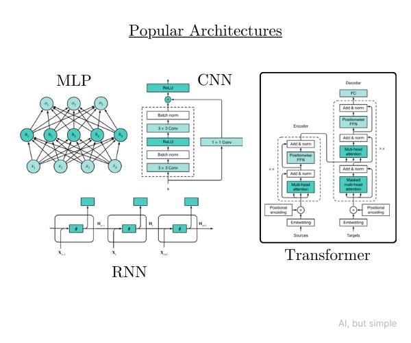
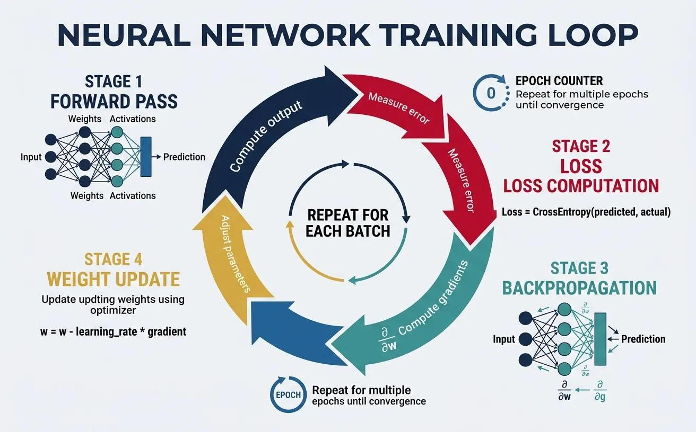
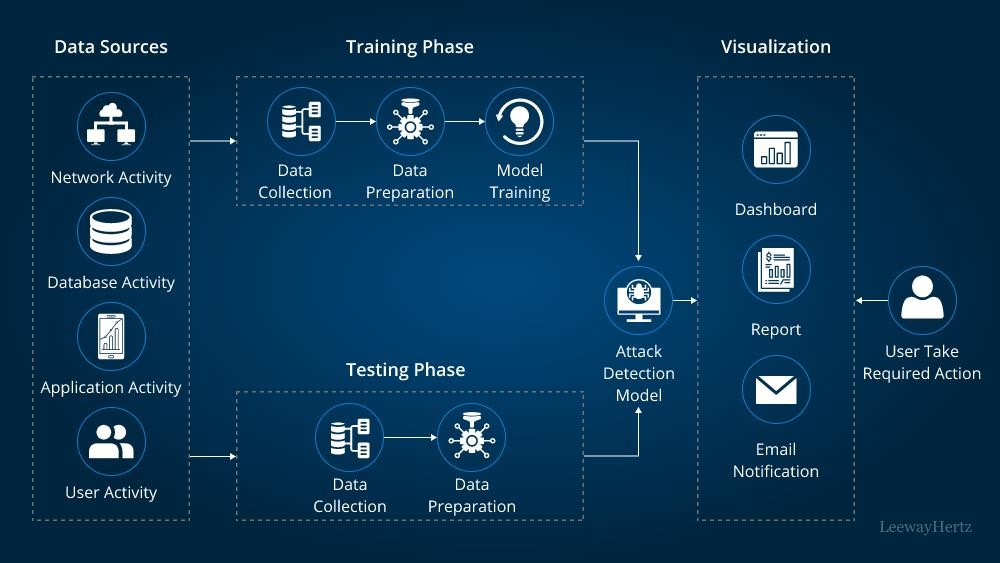

📖 Overview
Neural Networks are one of the most important technologies behind modern Artificial Intelligence. Inspired by the human brain, they allow computers to learn patterns from data and make intelligent decisions.
Unlike traditional programming methods, neural networks do not depend only on predefined rules. Instead, they improve their performance by learning from examples.
Key Idea
A neural network learns by adjusting connections between artificial neurons until it can recognize patterns and produce accurate results.
🧠 Neural Network Architecture

📥 Input Layer
Receives raw information such as images, text, or network data.
⚙ Hidden Layers
Processes information and learns complex patterns.
🎯 Output Layer
Provides the final prediction or classification.
🔬 Types of Neural Networks

- Feedforward Neural Network: Basic prediction and classification tasks.
- CNN: Used for image processing and computer vision.
- RNN: Designed for sequential data like speech and time series.
- Transformer: Powers modern AI systems and Large Language Models.
⚙️ How Neural Networks Learn

🌐 Applications of Neural Networks

🔐 Cybersecurity
Threat detection and anomaly analysis.
🏥 Healthcare
Disease prediction and medical imaging.
🚗 Automation
Self-driving systems and robotics.
🔐 Neural Networks in Cybersecurity
Neural networks are increasingly used in cybersecurity to identify malicious activities, detect unusual network behaviour, and improve intrusion detection systems.

✅ Conclusion
Neural Networks have transformed Artificial Intelligence by enabling machines to learn from experience. Their ability to identify complex patterns makes them valuable in areas such as cybersecurity, healthcare, robotics, and modern computing.
📚 References
- Deep Learning - Ian Goodfellow, Yoshua Bengio, Aaron Courville
- Stanford CS231n Neural Networks Course
- MIT Artificial Intelligence Research